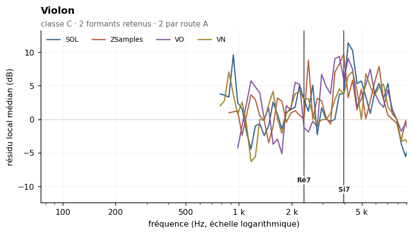
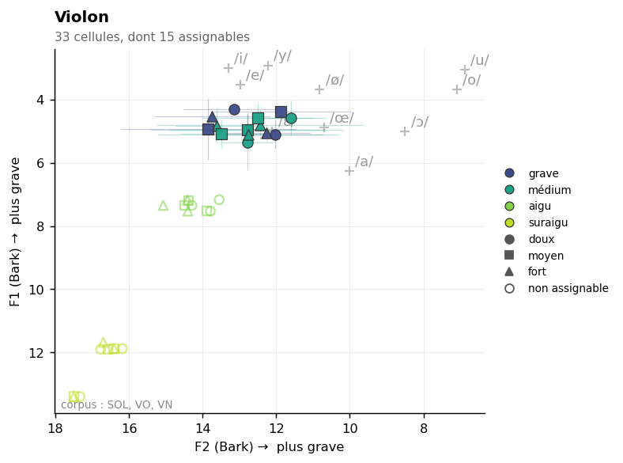

Violin
Sommaire › Les cordes
| Classe | Provenance | Échantillons | Tessiture | Formants établis |
|---|---|---|---|---|
| C | IRCAM | 284 | G3–E7 | 2 |
| Formant | Note | Corpus | Localisation |
|---|---|---|---|
| 2348 Hz | Ré7 | SOL ZSamples VN | |
| 3959 Hz | Si7 | VO ZSamples |


Statut des formants — révision du 26/10/2026
Confrontation des cinq corpus. Provenance de ce corpus : IRCAM (FullSOL2020).
Formant Statut 2348 Hz route A — VN + ZSamples au même point de grille, 2216 Hz · zone vue par SOL, VN, ZSamples. ⚠ La valeur de cette fiche, 2348 Hz, est à +1.0 demi-ton du couple : c'est 2216 Hz qui est établi 4432 Hz indéterminé — concordance à un demi-ton avec VN mais aucun couple au même point de grille. Environ une concordance sur quatre à ce seuil est fortuite.
etendue_residudans l'en-tête n'est pas une largeur de bande : c'est l'étendue du résidu de la méthode 8, souvent une butée de plage. Les largeurs mesurées sont dans_LARGEURS-DE-BANDE.md.
Méthode 8 — deux formants retenus, un fragile. Voir
00-METHODE.md, section « Typologie — trois classes ».
Le violon est l'instrument qui a imposé la révision de la typologie. Son ρ vaut 0,78, aussi élevé que celui des flûtes, et son enveloppe vraie est extrêmement dispersée : 2 003 Hz avec σ = 1 474 Hz, le plus fort écart-type de tout le corpus. Note par note, la mesure n'a aucun sens.
Et pourtant l'agrégation retient deux formants nets, dont un à +7,3 dB — le deuxième résidu le plus fort de tout le corpus mesuré, après le contrebasson. Les deux situations ne peuvent pas être confondues : la flûte, avec un ρ comparable, ne livre aucun formant.
L'explication est acoustique. La caisse du violon possède de nombreuses résonances étroites — résonance d'air, modes de table, « bridge hill » — dont aucune ne domine assez pour qu'un détecteur de pic unique s'y fixe. Le pic le plus proéminent retombe donc sur la fondamentale, d'où le ρ élevé, alors que les résonances existent bel et bien et ressortent dès qu'on agrège.
C'est le diagnostic que l'ancienne étude avait approché sans le formuler, en constatant que « le F1 du violon présente un écart-type atteignant σ = 651 Hz selon le registre ». Elle en avait tiré la nécessité du Fp ; la bonne conclusion était qu'il faut agréger.
| Zone | Résidu | Largeur −3 dB | Notes distinctes | Verdict |
|---|---|---|---|---|
| 2 348 Hz | +3,2 dB | 1 660–2 958 Hz | 11 | retenu |
| 4 432 Hz | +7,3 dB | 3 948–4 974 Hz | 21 | retenu |
| 5 583 Hz | +3,8 dB | 3 320–5 915 Hz | 25 | fragile |
Ajouté le 24/10/2026. Voir
_CARTE-VOCALIQUE.md.
La carte vocalique mesure le F2 du motif d'excitation auditive à 2 136 Hz dans la cellule aigu/fort — à un demi-ton du formant établi à 2 348 Hz. Les deux méthodes, qui ne partagent aucune étape de traitement, pointent la même région.
Cette corroboration vaut pour toute la famille :
| Instrument | Formant établi (méthode 8) | F2 de la carte vocalique (méthode 12) |
|---|---|---|
| Violon | 2 348 Hz — bridge hill | 2 136 Hz à l'aigu fort |
| Alto | 1 318 · 2 091 Hz | 1 314 Hz à l'aigu · 2 161 Hz au médium fort |
| Violoncelle | 1 108 · 2 216 Hz | 1 079 Hz au médium doux · 2 061 Hz au grave fort |
| Contrebasse | 1 396 Hz | 1 445–1 519 Hz au suraigu |
Et cela éclaire enfin la dispersion de F2 dans la carte vocalique (IQR de 3 à 5,4 Bark sur les cordes, alors que F1 est stable à moins d'un Bark) : ce n'est pas du bruit, c'est la signature de la classe C. Le détecteur de la méthode 12 verrouille tantôt sur une résonance de caisse, tantôt sur une autre, selon la note — et les formants établis par la méthode 8 disent précisément quels candidats existent.
La méthode 12 ne remplace donc pas la méthode 8 sur les cordes : la méthode 8 fournit la liste des résonances, la méthode 12 dit laquelle domine dans tel registre à telle dynamique. C'est la seule famille où les deux méthodes se complètent de cette manière.
| Zone | k = 2–3 | k = 4–7 | k = 8–15 | k ≥ 16 | Robustesse |
|---|---|---|---|---|---|
| 2 348 Hz | +2,5 | +3,2 | +4,1 | — | oui |
| 4 432 Hz | +6,6 | +7,6 | +10,2 | +8,8 | oui |
| 5 583 Hz | +3,9 | +2,3 | +1,5 | +1,1 | non |
Le formant à 4 432 Hz est l'un des mieux établis de tout le corpus : positif et supérieur à +6 dB sur les quatre groupes de rang, avec un maximum de +10,2 dB, et une bande à −3 dB étroite (3 948–4 974 Hz, soit un peu plus d'un tiers d'octave).
Le pic à 5 583 Hz présente des résidus décroissant régulièrement avec le rang et échoue à la robustesse : il s'agit probablement du flanc supérieur du précédent.
| Descripteur | Valeur | Lecture |
|---|---|---|
| Pente spectrale médiane | −13,5 dB/octave (σ 2,5) | décroissance modérée |
| Harmoniques par note | 15 [4–56] | faible dans l'aigu : tessiture très étendue |
| Balance impair − pair | −2,8 dB | corde frottée, série complète |
| Enveloppe vraie (méthode 6) | 2 003 Hz, σ 1 474 | record de dispersion du corpus |
| Source | Valeur annoncée | Notre mesure | Lecture |
|---|---|---|---|
| Acoustique du violon (littérature générale) | « bridge hill » ~2–3 kHz | formant retenu à 2 348 Hz | très cohérent |
| Meyer (2009) | Hauptformant des cordes | — | à vérifier aux sources primaires |
Ancien pipeline specenv |
F1 = 506 Hz, zone /o/ | — | hauteur médiane (rapport 0,79) |
| Ancien Fp | 893 Hz | — | artefact de fenêtre |
| LPC mai 2026 | F1 médian 2 179 Hz, σ 642 | 2 348 Hz | convergent |
| Cepstre mai 2026 (ordre 80) | 2 454 Hz, σ 1 118, 60 % sur un harmonique | 2 348 Hz | proche, mais non valide |
Deux points importants.
Le formant à 2 348 Hz correspond à la région que la littérature acoustique du violon nomme le « bridge hill », zone de résonance du chevalet classiquement située entre 2 et 3 kHz. C'est une validation externe forte, et elle n'avait jamais été rapprochée de cette étude.
Le LPC de mai 2026 tombait juste : 2 179 Hz, à un demi-ton de notre mesure. L'ancienne étude l'avait écarté au motif que son σ de 642 Hz était trop élevé, et avait préféré le Fp. C'était l'inverse qu'il fallait faire : le LPC pointait la bonne région avec une forte dispersion, le Fp pointait une région fausse avec une faible dispersion. La stabilité d'une mesure ne garantit pas sa justesse.
Data/registres.md : grave G3–C4 · médium C4–C5 · aigu C5–C6 · suraigu C6 et au-dessus.
Mesure par registre : non effectuée.
Note sur l'ancienne analyse : la « convergence exacte Δ = 0 Hz » annoncée entre le violon médium/aigu et le registre de gorge de la clarinette (355 Hz), présentée comme « base de la doublure clarinette-violon », reposait sur deux zones de fondamentale.
Rang du formant dans son propre spectre : 50 % signifie que les deux méthodes ne s'accordent pas mieux là qu'ailleurs. Voir ../_APPARIEMENT-LPC.md.
| Formant | Statut | Rang |
|---|---|---|
| 2348 Hz | route A | 70,8 % |
| 3959 Hz | route A | 79,2 % |
Part de pics non localisables — l'enveloppe n'y redescend pas de 3 dB des deux côtés, donc le formant n'a pas de largeur mesurable. Voir ../_LARGEUR-PAR-REGISTRE.md.
| doux | moyen | fort | |
|---|---|---|---|
| tous registres | 3 % | 1 % | 0 % |
| grave | 0 % | 0 % | 0 % |
| médium | 3 % | 1 % | 0 % |
| aigu | 3 % | 0 % | 0 % |
| suraigu | 8 % | 0 % | 0 % |
Effet doux → fort : +3 points. Effet négligeable.
21 paires calculées. Fusion moyenne : 28 %. Voir ../_MELANGES.md.
| Couleur nouvelle avec | Se fond avec | ||
|---|---|---|---|
| Hautbois | 42 % | Trombone ténor | 43 % |
| Contrebasse | 41 % | Clarinette en Mib | 42 % |
| Clarinette basse en Sib | 40 % | Petite flûte | 42 % |
À compléter. Éléments acquis :
Aucun à ce stade. Figures prévues dans ../Versions-html-and-docx/media/ :
| Fichier prévu | Contenu |
|---|---|
violon_composite.png |
enveloppe composite — formant à 4 432 Hz bien circonscrit |
violon_te_dispersion.png |
pic d'enveloppe vraie contre f0 : σ = 1 474 Hz, illustration de la classe C |
violon_bridge_hill.png |
zone 2 348 Hz rapprochée du « bridge hill » de la littérature |
convergence_4200.png |
~~figure majeure~~ ÉCARTÉE le 24/10 : les cinq instruments de la région 4 183–4 695 Hz |
_REPLICATION.md.